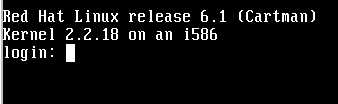
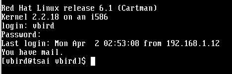
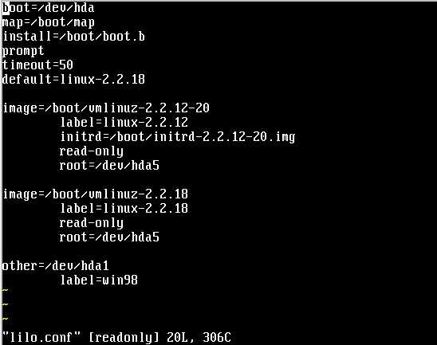
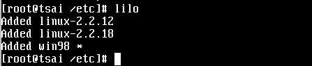

开机不是只要单击电源钮而关机只要关掉电源钮就可以了吗？有何大学问？话是这样没错啦，但是由于 Linux 是一套多人多任务的操作系统，你难保你在关机时没有人在在线，如果你关机的时候碰巧一大群人在在线工作，那会让当时在在线工作的人马上断线的！那不是害死人了！一些数据可以无价之宝哩！另外，与 DOS 环境不同的是， Linux 在执行的时候，虽然你在画面上只会看到黑压压的一片，完全没有任何画面，但其实他是有很多的程序在背景底下执行的，例如邮件程序、浏览器主机程序等，你如果随便关机的话，是很容易伤害硬盘及数据传输的动作的！所以在 Linux 下关机可是一门大学问喔！开机（登入）
对啦！在没有电源的情况下，开机只要单击电源钮就够了！计算机会先去读 BIOS 里头的设定，然后就开始开机程序。请记得，如果你在 BIOS 的开机设定是以 CD-ROM 为第一项，请将可开机的光盘片拿出来。且 A 槽最好不要放软盘喔！
OK！是否还记得在安装 Linux 的时候安装的开机程序是啥？没错，就是可以设定多重引导的 Lilo 这套软件，而由于 Lilo 的开机信息通常是存放在 MBR 当中，所以系统会先找到我们的 Linux 设定，因此开机过程中，屏幕的最底下一行会出现：
LILO boot:_这一行字，如果你在大约十秒钟的时间没有动作，则系统将以 Linux 默认的情况进行开机（通常是预设为 Linux 开机）。如果你在这个时候单击 『Tab』 键，则屏幕上应该会出现：
LILO boot: <== 这里单击 Tab
linux dos
boot: _ <== 光标在这里好了，这个画面告诉你系统目前有两个可以开机的扇区，其名称分别是 linux 与 dos 两个，其实这就是我们在安装的时候设定的开机名称！而游标会在 boot: 后面，这时如果按 『Enter』 则系统会直接以默认的 linux 系统开机，如果打 linux 则同样以 linux 开机，当然，打 dos 就会以 dos 进入开机程序！所以打 dos 开机时你就会见到 windows98 的开机画面啰！因此，如果你在安装 Linux 之前的 Windows98 并没有安装的很完整，这个时候可以再以 dos进入 Windows98 去设定你其他的需求！
嗯，如果你是以 Linux 开机，那首先系统会先去搜寻你的硬设备，这时屏幕上会出现很多硬件信息的讯息，你可以一行行的看，也可以不用看，因为每次开机的这些信息会存在 /var/log/dmesg 这个档案中，你可以在开机完毕之后再仔细的分析这些档案数据！搜寻软硬件信息之后，便开始启动一些服务（services），例如： ftp、telnet、talk等等！当然，你的其他架站设定也会一并的启动。在预设的状况之下， Linux 的架站服务会自动帮你设定两个基本的小站，一个是 mail server ，用的是 sendmail 这套软件，另一个是 WWW server ，用的是 httpd 这一套软件，不过这些服务一开始的设定可能是不对的，这不打紧，因为架站这部分我们会在后面提到，这里只是先告诉你一般来说 Linux 会有的预设服务罢了！
开机完毕之后就需要登入了，登入的画面有点像这样：

会显示你所使用的 Linux 核心版本 （Kernel） 与 Red Hat 版本！这里注意一下，上面这个例子中，因为我是以另一台已经将核心更新过的机器作为示范，所以核心版本是 2.2.18 ，如果你是以这个站上面的档案制成的光盘安装的话，你的核心应该是 2.2.12-20 才对！好了，现在在 login: 的地方输入： root ，按 Enter 后再输入你的密码，就可以顺利的登入你的机器了，root 是系统管理员的意思。另外要注意的是，由于这一款 Linux 为了系统保密的关系，是不允许远程以 root 的身份登入的！就是说，如果你以后以 telnet 的网络方式连上这台机器的话， root 这个账号是不能进入的！因此身为系统管理员的你最好有另一个一般的账号，如我以 vbird 的身份登入我的系统之后，有如下面的画面：

系统会告诉你，你上次进入系统的时间与联机的机器！然后会显示你的身份与所在的目录！注意啰，如果你是以 root 身份进入的话，那就会变成 [root@tsai root]# 这付模样。
另外，如果你在前一章安装设定时设定开机启动为 X-Window，那出现的登入画面则是一个图形接口的咚咚，登入的方法是一样的，只是画面变成图形接口了！
远程以 Windows 软件登入 Linux 主机
这是我对 Linux 最喜欢的功能之一了，当你已经架设好 Linux 主机，并且也已经正常的连上 Internet 之后，你应该已经有个合法的 IP （实体IP），如果你已经设定好了 DNS 的话更棒，这样你可以直接使用 telnet 或 netterm 等联机软件登入你这架主机！假设你的 DNS 是 sun.os.test.com ，则使用 『开始』->『执行』键入：
telnet sun.os.test.com，这样在任何地方就都可以连上你的主机啰！很棒吧！
关机
关机的方式有很多，不过都要注意一件事，就是『不要在开机的情况下直接按下电源』关机，不然造成机器损毁时不要找我.....。
通常关机所下的指令是（在指令之前的 # 是提示字符的意思！）：
# shutdown -h now 或者是：
# reboot 这是立刻关机及重新启动的意思，不过很多的文章都建议在进行关机程序之前，先将 Linux 贮放在缓冲区的数据写进硬盘中，所以你可以先执行：
# sync 这个指令来将数据写回磁盘中！当然了，你也可以让系统在固定的时间或在一定的时间后关机，指令如下：
# shutdown -h 20:25 <======系统在今天的 20:25 关机
# shutdown -h +10 <======系统在 10 分钟后关机在关机的过程中也会显示相当多的讯息，以告诉你系统关闭的项目为何。
通常我都是使用 reboot 这个指令来重新启动 Linux ，而在 Linux 跑完关机程序之后我便将电源关掉！因为我的系统目前还很单纯，没有开启很多服务，自然不用太在乎缓冲区中的数据，但是，好习惯的养成是很重要的，所以正确 的关机程序应该是需要养成的！你可以如下进行关机程序：
# sync;sync;sync
# reboot然后在系统出现 哔 的一声后再关掉电源！
那如果你是以 X-Window 登入的话，要注销时你可以以鼠标在画面中的左下角有一个『脚丫子』形状的咚咚上面单击，会出现类似 Windows 的『开始』的一串字，最下方有一个 logout 的选项，按下这个选项后，画面正中央会出现一个方框，里面共有三个选项，这时选择 reboot 这个选项即可重新启动！
其实，这一部份应该在后面才提到，因为目前还没有说到『 vi 』这套字处理程序（有点像是早期 DOS 下的 PE2或是汉书等软件），不过因为多重引导与开关机是有相关的，所以鸟哥将之写在一起， Anyway，这里还是假设您已经知道如何使用 Linux 下的文字处理软件了，如果您还不了解 vi 的话，请先翻到后面的章节学学使用 vi 再说吧！2002/ 01/01以来统计人数设定多重引导时仅需要修改一个档案，及执行一个档案！修改的档案在 『 /etc 』目录下，文件名为 lilo.conf ，所以你要做的就是以 vi 来修改这个档案啰！注意唷，因为底下要修改的档案只有 管理员（root） 才有权限更改，所以除非你在主机上以 root 的身份登入，否则你必须使用 su 来更改你的身份成为管理员。执行的程序如下：
以 root 的身份登入之后先进入 etc 这个目录，然后执行 vi ，所以键入：
# cd /etc
# vi lilo.conf按下 enter 之后，画面会变成这样：

画面的最下面一行会告诉你这个档案的属性为：这个档案共有 20 行，及共有 306 个字符！你可以用箭头键移动光标，在这个档案中，由于我先更新过系统核心，但又不想放弃比较先前一个版本的核心，所以设计了两个核心并存，另外尚包含一个 Windows 启动扇区的设定。
在此将上面的几行字解释一下：
注意到了没？在开机的选项后面均有一个开机的扇区，在 Linux 下，分别是 /boot/vmlinuz-2.2.12-20、/boot/vmlinuz-2.2.18及 /dev/hda1，这就是开机的系统区，而在你安装 Linux 前，不是有分割硬盘吗？这里你就可以参照一下你的开机区与你的系统所在扇区啰！
- 『 boot=/dev/hda 』：告诉你开机是由 hda （第一颗硬盘，在安装的时候解释过。）的 MBR 开机；
- 『 map=/boot/boot.b 』：我也不是很清楚，应该是关于系统的模块配置文件；
- 『 install=/boot/boot.b 』：跟上面一样；
- 『 default=linux-2.2.18 』：系统的默认开机选项为 linux-2.2.18 这一项！注意： image后面接的就是开机的咚咚，所以共有三个开机档（两个image及一个other）
- 『 image=/boot/vmlinuz-2.2.12-20 』：vmlinuz-2.2.12-20是系统核心开机文件，这一行以下的咚咚在告诉你，以 vmlinuz-2.2.12-20 这个版本核心的讯息；（其中要注意的是，底下每行的前面是按下 Tab 键所造成的空白，不是以空格键按出来的。）
label=linux-2.2.12 ：就是你在按下 Tab 键之后，显示的文件头数据；
root=/dev/hda5 ：就是启动扇区位于第五个启动扇区（与你的硬盘配置有关）
read-only ：这个系统文件只可以读取！
- 底下的另一个 image 是同样以 Linux 核心开机的设定数据；
- 『 other=/dev/hda1 』：最后面这一个咚咚告诉你，还有一个非 Linux 的启动扇区在 hda1 上面，而这个启动扇区的代号为 win98。
将默认的开机选项设定为 Windows98：
要将原先设定的 Linux 开机变成 Windows 开机是很简单的。基本上最上面几行可以不用修改，仅需要改的是 default 这个项目，如果你希望进入系统时先以 Windows 开机，若输入 linux 才进入 linux 系统的话，你可以将 default 后面的 linux-2.2.18 改成 win98 这个项目。
然后重新启动即可完成设定。上面这一个画面系统就告诉你，目前有三个开机区，而预设的开机区是 win98 （有打 ＊ 号的），这样便完成修改的动作啰！当然，要改回来的话，只要将前四个步骤的 win98 与 linux-2.2.18 对换回来即可！
- 先移动光标至 linux-2.2.18 的 l 字母上面；
- 按小写『 x 』将 linux-2.2.18 消掉（x 键是 vi 这套软件的 del 键）
- 按小写『 i 』之后变成输入模式，画面底部会变成『 -- INSERT -- 』字样，
- 输入 win98；
- 按 Esc 键退出输入模式，
- 按『 :wq 』修改贮存并退出 vi 软件；
- 最后，请一定输入『 lilo 』以执行修改后的设定。画面会如下：
另外，常常我们在进行多重引导的设定时，偶尔会有设定错误的情况发生，这时，在上面这个画面中，就不会显示『*』，而且也不会有 Added 字样产生，果真如此的话，请您再回刚刚的 vi 画面修改 lilo.conf 这个程序，通常最容易发生错误的地方在：你所给的启动扇区不存在，或者你的启动文件写错了！
- Q：如何完全移除 Lilo ：
A：
请参考前面一章的问题讨论。
- 等待加入新讨论：